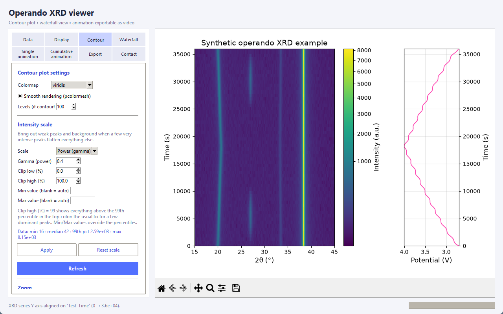
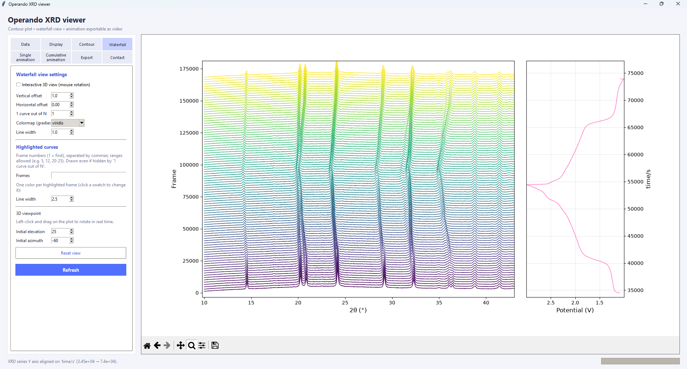
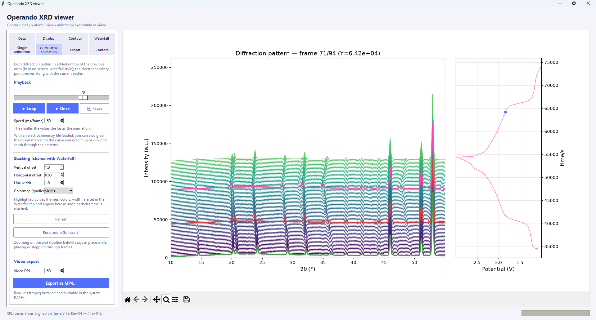

See your operando XRD series and the electrochemistry together
A free, standalone desktop tool: stack hundreds of diffraction patterns into a contour plot or a waterfall, play them as an animation, and keep the cycling curve aligned next to them.
Single .exe, no Python needed · free and open source (MIT)

Features
Everything you need to look at an operando experiment, in one window.
Contour plot
2θ / time / intensity as colour. A full intensity-scale control (linear, square root, gamma, logarithmic, percentile clipping, min/max) keeps a few very intense peaks from flattening the weak ones.
Waterfall, 2D or 3D
Stacked patterns with horizontal and vertical offsets, an interactive 3D view, and highlighted curves: pick patterns and give each its own colour and a thicker line.
Animations
Play patterns one at a time, or let them pile up as the experiment progresses. Export either one as an MP4 video.
Electrochemistry alongside
Load an EC-Lab .mpt or a generic .csv. The curve follows every view, and in the animations a marker you can drag along the curve scrubs through the patterns.
Export
PDF and SVG (vector) or PNG figures, MP4 animations, and CSV / Excel data files (patterns as columns, intensity matrix, electrochemistry) to re-plot in Origin or Excel.
Simple to share
One executable for Windows; on macOS and Linux run the single Python script. A small synthetic dataset is included to try everything in a minute.
Screenshots
Shown with the synthetic example dataset included in the repository.


Download
Always the latest version.
Windows
Download OperandoViewer.exe and double-click it. Windows SmartScreen may warn the first time because the file is not code-signed: choose More info → Run anyway.
macOS / Linux / from source
Needs Python 3 with Tkinter.
git clone https://github.com/jeannoelchotard/OperandoViewer
cd OperandoViewer
pip install -r requirements.txt
python operando_viewer.pyMP4 export also needs ffmpeg in your PATH.
Quick start
With the synthetic example from the examples/ folder of the repository.
- Data tab → From a .buf file →
examples/synthetic_series.buf(or Select files… and pick the.xyfiles). - Data tab → Load .csv… →
examples/synthetic_echem.csv. - Switch between the Contour, Waterfall and animation tabs.
| Diffraction patterns | Plain-text files with two numeric columns (2θ, intensity): .xy, .dat, .uxd… Select the files, or give a .buf file listing one path per line. |
|---|---|
| Electrochemistry | EC-Lab .mpt, or a generic .csv (comma, semicolon or tab separated). Any numeric column can be used for the axes. |
Contact, citation and license
Feedback & feature requests
Questions, bugs or ideas for changes are welcome: open an issue on GitHub or write to Jean-Noël Chotard, jean-noel.chotard@u-picardie.fr.
Cite this software
If it helps your research, please cite it: the GitHub page has a “Cite this repository” button with ready-made BibTeX and APA entries.
License
Free and open source under the MIT license.